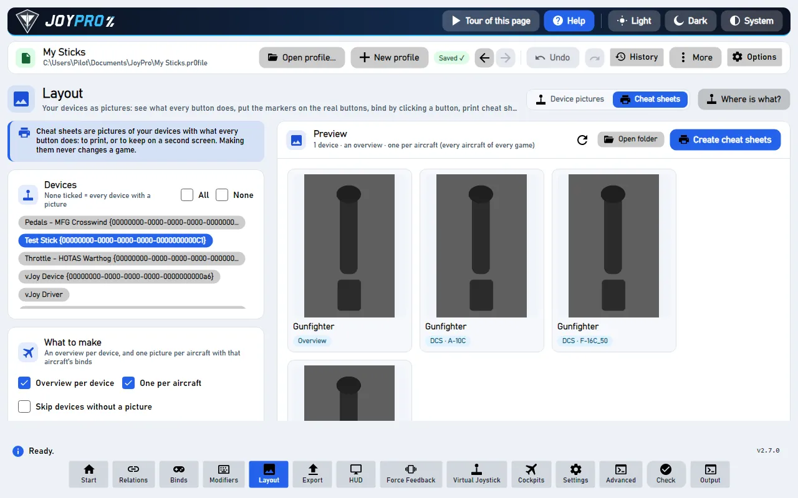

#Toto zařízení má vlastní styl
Zaškrtávací políčkopopsánoDá zobrazenému zařízení vlastní styl: barvy, písmo a značky jeho taháku.
Ukládá se s listem zařízení a putuje s ním přes Sdílet rozvržení....
Stránka Rozvržení ukazuje obrázek každého z vašich zařízení s tím, co dělá každé tlačítko, hat a osa. Má dvě sekce, přepínané nahoře: Obrázky zařízení (vždy jedno zařízení: prohlížet, opravit značky, přiřadit na obrázku) a Taháky (obrázky všech vašich zařízení k tisku, pro každý letoun). Nic na této stránce nemění hru, kromě přiřazení, které uděláte v režimu Přiřadit – to jde do vašeho profilu jako každé jiné přiřazení.


Co je kde? otevře okno se všemi vašimi zařízeními. U každého ovládacího prvku je napsáno, co ve vaší hře dělá. Najdete ho vpravo nahoře na této stránce, na stránce Start a v nabídce v oznamovací oblasti.
Sledovat hru přepne na hru, kterou hrajete, a v DCS na letoun, se kterým létáte. Více: Co je kde? Podívejte se, co které tlačítko dělá.


JoyPro umí dát stránku s vašimi přiřazeními na kneeboard každého letounu v DCS. Čtete ji přímo v kokpitu.
Změnili jste tlačítko? Stiskněte znovu Vložit na kneeboard: JoyPro nahradí své vlastní stránky. Vaše ostatní stránky kneeboardu zůstanou. Více: Zobrazit moje přiřazení na kneeboardu DCS.


Obrázky vašich zařízení s každým přiřazením napsaným vedle tlačítek, k tisku nebo na druhou obrazovku. Zaškrtněte zařízení, hry a letouny, zvolte Přehled na zařízení a/nebo Jeden na letoun, stiskněte Vytvořit taháky. Obrázky (PNG) jdou do výstupní složky; náhled je ukazuje.


Tahák ukazuje, co tlačítka dělají v jednom letounu, s vlastními názvy příkazů dané hry, když ji vyberete v poli náhledu. Přiřazení udělané v režimu Přiřadit se zapíše do hry při dalším exportu, stejně jako přiřazení nahrané na stránce Přiřazení.
Pás obrázků nad plátnem má tlačítko pro každý obrázek zařízení. Pole vedle tlačítka 3D vybírá styl kresby: Čáry, nebo ploché barvy pod výraznými obrysy (barvy v Nastavení > Výkresy). Zařízení s 3D modelem dostanou 3D pohled: tažením otáčíte, kolečko přibližuje, dvojklik obnoví pohled. Plochý výkres je to, co tisknou taháky a s čím pracuje režim Upravit.
JoyPro rozpozná zařízení podle jeho USB id, názvu a vstupů, které hlásí, porovnáním s katalogem několika set modelů. Když to nedokáže určit (základna s vyměnitelnými rukojeťmi, jedno USB id pro více produktů, neznámé zařízení), zeptá se nad obrázkem: Které to je? s dlaždicemi kandidátů, Nejpravděpodobnější jako první, Ponechat nejpravděpodobnější, Není uvedeno: hledat v katalogu, Teď ne. U neznámého zařízení vyberete i jeho druh. Model... > Vybrat jiný model... se zeptá znovu kdykoli.
Když zobrazený obrázek nezná polohu žádné části ("Na tomto obrázku zatím nejsou žádné polohy"), pomocník se značkami je umístí během minuty:
Když zařízení nemáte po ruce, Nyní umístěte: X jmenuje další vstup; kliknutí ho tam umístí, Později se na něj zeptá po ostatních a vstupy bez místa jsou štítky, které můžete přetáhnout na obrázek. Vrátit zpět vrátí poslední umístění; Přeskočit přejde na další vstup; Zastavit udělá pauzu. Více obsahuje Osa, Zastavit, Přidat ovládací prvek (prvek, který JoyPro nezná: tlačítko, přepínač, hat, mini-páčka, enkodér, osa) a Odebrat z obrázku.


Více > Nalezená místa (experimentální) nakreslí tenké přerušované kroužky na místa fotografie, která vypadají jako tlačítka, haty nebo přepínače. Kliknutí (nebo puštěný štítek) poblíž kroužku umístí značku do jeho středu. JoyPro neví, který vstup to místo je, takže sám nic neumístí; funguje na fotografiích, ne na výkresech JoyPro, a běží offline.
Na obrázku se známými polohami nakreslí Tabulky (panel nástrojů) vzhled taháků z JoyPro 1: tabulku pro každou skupinu ovládacích prvků kolem obrázku, čáry k částem, přiřazenou relaci na každém řádku a přiřazení s modifikátorem ve druhém sloupci. Pole náhledu vybírá, co řádky ukazují: Názvy relací, nebo jednu hru a letoun s vlastními názvy z menu dané hry. V režimu Upravit přetahujete tabulku (připne se), její pravý okraj, úsek čáry nebo bod; boční panel má Sloupec modifikátorů, Řádek + / Řádek −, Připnuto, Znovu vést čáru, Odebrat čáru, Rozdělit na jednotlivé tabulky, Seskupit znovu, Automatické uspořádání a Obnovit původní. Relace přetažená z Přetáhněte relaci na řádek a puštěná na řádek se tam přiřadí.


Více pohledů dá na stránku více obrázků jednoho zařízení (zepředu a z boku, aby bylo pokryto každé tlačítko): Přidat pohled, Váš obrázek..., Uspořádat, Upravit tento pohled, Odebrat pohled, Odebrat stránku, Zpět na jeden obrázek. Formát stránky je A4 nebo Letter pro tisk, 16:9 / 21:9 / 32:9 pro obrazovku. Taháky tisknou celou stránku.
Když vstup chybí nebo je na špatném místě, opravte ho v režimu Upravit (přetažení, Přidat ovládací prvek, Odebrat z obrázku, přejmenování v legendě). Vše se uchová na tomto PC jako vaše vrstva nad daty JoyPro. Odeslat opravu do JoyPro... uloží změnu jako malý soubor a otevře předvyplněný formulář issue na GitHubu; tam se rozhodnete, zda ho odešlete. Model... > Obnovit výchozí stav JoyPro... odstraní všechny vaše změny zařízení (nejprve se zeptá; Vrátit obnovení je vrátí zpět).
V / E / B režimy, N umístit značku (soubor rozvržení), Del odebrat, Ctrl+Z / Ctrl+Y zpět a znovu, Ctrl+S uložit, + / - zoom, 0 nebo F přizpůsobit, šipky posouvají v režimu Upravit (Shift: 10 px), Alt táhne bez přichytávání, puštěný soubor obrázku se stane vaší fotografií zařízení.
flowchart TD D["Zařízení<br/>(USB id, název, vstupy)"] --> I["DeviceIdentifier<br/>+ katalog zařízení"] I --> R["Reference zařízení:<br/>model, části, obrázky"] R --> C["DeviceMarkerCanvas<br/>(Zobrazit / Upravit / Přiřadit)"] P["Přiřazení profilu<br/>(binds list)"] --> C C --> B["binds set"] R --> S["List s popisky:<br/>tabulky a čáry"] S --> L["layout render:<br/>PNG pro každé zařízení<br/>a letoun"] S --> K["layout kneeboard:<br/>DCS Kneeboard nebo<br/>OpenKneeboard"]
MainWindowViewModel.LayoutWorkspace.cs (režimy, zpět, přiřadit a uvolnit), LayoutReference.cs (referenční obrázek, uložení, hostitel pomocníka), LayoutCallouts.cs (tabulky a čáry), MultiView.cs, CheatSheets.cs, ReferencePhotos.cs, Device3D.cs, DeviceIcons.cs, ModelChoice.cs, LayoutReset.cs, UnmappedPress.cs; DeviceReferenceViewModel*.cs, MarkerAssistantViewModel.cs, SheetStyleViewModel.cs. Plátno: Views/Controls/DeviceMarkerCanvas.cs, CalloutSheetCanvas.cs, MultiViewCanvas.cs.<data>\DeviceReference): grips.json (odpovědi k modelům), Layouts\ (vaše polohy pro každý obrázek), Callouts\ (tabulky a čáry), MultiView\, ReferencePhotos\<model>\ (kontrolováno pomocí SHA-256), Corrections\, ResetBackups\; vaše definice zařízení v <data>\Devices. Globální styl listů v sheet-style.json.engine layout suggest (najde obrázek pro každé zařízení, rozvržení na obrázku, který jste vybrali), engine layout render (taháky), engine layout image (soubor rozvržení, který profil používá), engine layout template-inspect / engine layout template-save (editor souboru rozvržení), engine layout callouts, engine layout multiview, engine layout titles (názvy z menu hry), engine hud devices (modely připojených zařízení), engine devices reference (rozpoznání, nalezená místa), engine binds list.Dokumentace funkcí za touto stránkou, vygenerovaná z repozitáře:
152 ovládacích prvků, načtených ze zdrojového kódu programu: 152 popsáno, 0 s fakty ze zdrojového kódu (popisek, komentář v kódu, volání enginu), 0 ještě k rozšíření.
Dá zobrazenému zařízení vlastní styl: barvy, písmo a značky jeho taháku.
Ukládá se s listem zařízení a putuje s ním přes Sdílet rozvržení....
Popisek Převezme všechny barvy, písmo a výkres předvolby
Dá stylu listu všechny barvy, písmo a kresbu předvolby zvolené výše.
Editor a taháky ho použijí hned; uloží se okamžitě.
Popisek Odstranit tuto vlastní předvolbu
Smaže zvolenou vlastní předvolbu. Používaný styl se nezmění.
Popisek Uloží tento styl pod názvem, abyste ho mohli později znovu použít
Uloží současný styl listu jako předvolbu pod názvem zadaným výše, abyste ho mohli později znovu použít.
Název předvolby JoyPro se odmítne; vaše předvolba se stejným názvem se nahradí.
Popisek Přidat modifikátor a jeho barvu
Přidá řádek pro barvu modifikátoru. Zadejte modifikátor tak, jak ho pojmenovávají vaše přiřazení: jeho značky a pruh nad jeho sloupcem dostanou tuto barvu.
Odstraní tuto barvu modifikátoru ze stylu listu; značky přiřazení s tímto modifikátorem znovu dostanou barvu svého druhu.
Popisek Stiskněte tlačítko, pohněte osou nebo hatem: jeho řádek se rozsvítí a jeho funkce se zobrazí nahoře. Čte vaše zařízení jen, dokud je toto okno otevřené.
Okno rozvržení, ve výchozím stavu zapnuto: stiskněte tlačítko nebo pohněte osou či hatem a jeho řádek se rozsvítí; jeho funkce se zobrazí velkým písmem nahoře.
JoyPro čte vaše zařízení, jen dokud je okno otevřené a neminimalizované, a po chvíli bez vstupu jen každých 250 ms.
Popisek Přepne na hru, kterou hrajete, a v DCS na letoun, kterým létáte (vyžaduje hák DCS od JoyPro). Bez toho zůstane vaše volba.
Okno rozvržení: přepne na hru, kterou hrajete, a v DCS na letoun, kterým letíte.
Bez toho zůstane vaše volba.
Popisek Znovu načte přiřazení (poté, co jste něco změnili)
Okno rozvržení: znovu načte přiřazení, například poté, co jste něco změnili na stránce Přiřazení.
Zavře okno rozvržení. JoyPro si pamatuje, kde bylo a co ukazovalo; příště se tam otevře.
Když zůstane otevřené při zavření JoyPro, vrátí se při příštím spuštění.
Popisek Každé zařízení s tím, co každý ovládací prvek dělá v jedné hře a letounu, ve vlastním okně (i pro druhý monitor); co stisknete, se rozsvítí
Co je kde? otevře okno rozvržení: samostatné okno s každým zařízením a funkcí na každém ovládacím prvku pro jednu hru a letoun.
Co stisknete, se rozsvítí.
Popisek Obrázek jednoho zařízení: co jeho vstupy dělají, úprava značek, přiřazování na obrázku
Zobrazí sekci Obrázky zařízení: jedno zařízení po druhém s tím, co dělají jeho vstupy, kde upravujete značky a přiřazujete na obrázku.
Popisek Tisknutelné obrázky vašich zařízení s tím, co každé tlačítko dělá (nemění žádnou hru)
Zobrazí sekci Taháky: obrázky vašich zařízení k tisku s tím, co dělá každé tlačítko.
Jejich vytvoření nemění žádnou hru.
Popisek Znovu najít obrázky vašich zařízení
Najít moje zařízení: vyhledá obrázek každého připojeného zařízení a vypíše je vlevo.
Popisek Jaký model toto zařízení je (vybrat jiný, uvést, že to není vaše zařízení, vrátit poslední volbu) a Obnovit výchozí stav JoyPro
Otevře nabídku modelu zařízení: Vybrat jiný model..., Toto není moje zařízení, Vrátit poslední volbu modelu, Obnovit výchozí stav JoyPro... a po obnovení i jeho vrácení.
Znovu se u tohoto zařízení zeptá Které to je?, s jeho kandidáty a hledáním v katalogu na jedno kliknutí.
Použijte to, když JoyPro ukazuje špatný model.
Říká, že zobrazený model je špatný: zařízení se bere jako neznámé a vede se jako svůj druh, dokud nevyberete jeho model v otázce nad obrázkem.
Vrátí dřívější odpověď o modelu tohoto zařízení.
Popisek Všechny změny obrázku tohoto zařízení zmizí: polohy značek, tabulky a čáry, přejmenované části, vaše fotografie, vaše definice a soubor rozvržení, který profil používá. Nejprve se zeptá; Vrátit obnovení vše vrátí zpět.
Odstraní vše, co jste na obrázku tohoto zařízení změnili: polohy značek, tabulky a čáry, přejmenované části, vaši fotografii, vaši vlastní definici a soubor rozvržení, který profil používá.
Nejprve se zeptá; Vrátit obnovení vše vrátí zpět.
"Vrátit obnovení <device>": vrátí vše, co Obnovit výchozí stav JoyPro... odstranilo.
Otevře Nahradit zařízení s tímto zařízením jako starým: jeho přiřazení se přesunou na jiné zařízení vstup po vstupu, nejprve s náhledem.
Vyžaduje otevřený profil; použití je jedna změna v Historii.
Popisek Vaše rozvržení z JoyPro 1 (soubory .layout s vašimi obrázky): JoyPro je zkopíruje a zobrazí u zařízení, pro která byla vytvořena. Stará složka se pouze čte.
Vybere vaši složku JoyPro 1: JoyPro zkopíruje soubory .layout s vašimi obrázky a zobrazí je u zařízení, pro která byly vytvořeny.
Stará složka se jen čte.
Popisek Otevře hledání obrázků pro výrobce a model vybraného zařízení
Otevře ve vašem prohlížeči hledání obrázků pro výrobce a model vybraného zařízení.
Uložte si dobrý obrázek, vložte ho do pole níže a stiskněte Použít obrázek.
Vybere soubor obrázku zařízení pro Použít obrázek.
Sestaví rozvržení na obrázku, který jste zvolili: engine na něj umístí skutečná tlačítka a osy zařízení jako značky a s otevřeným profilem ho uloží jako rozvržení zařízení pro taháky.
Popisek Otevře složku v Průzkumníku (JoyPro ji podle potřeby vytvoří)
Otevře složku pro taháky od komunity, které jste dostali.
Soubory obrázků, které tam vložíte, se nabízejí jako 2D rozvržení jejich zařízení v pásu obrázků.
Navrhnout hledá obrázky připojených zařízení.
Zachová se pro příští spuštění.
Navrhnout hledá také obrázky zařízení, pro která má váš profil přiřazení, ať jsou připojená, nebo ne.
Zachová se pro příští spuštění.
Navrhnout uloží obrázek, který pro každé zařízení vybere, do profilu.
Zachová se pro příští spuštění.
Popisek Použít vybrané obrázky pro taháky
Použije soubory rozvržení zvolených návrhů pro taháky a zaškrtne tam tato zařízení.
Volby se zachovají pro příští spuštění, dokud se obrázek zařízení neresetuje nebo ho nenahradí jiné rozvržení.
Otevře soubor rozvržení zvoleného návrhu v editoru souborů rozvržení: načte soubor a ukáže ho na plátně.
Znovu načte soubor v Soubor rozvržení do editoru souborů rozvržení.
Popisek Pohled: co každý vstup dělá (V)
Přepne režim obrázku: Zobrazit ukáže, co dělá každý vstup, Upravit přesouvá značky a otevře nástroje úprav, Přiřadit přiřadí relaci ke kliknutému vstupu.
Umístit značku: příští kliknutí na obrázek tam umístí novou značku se vstupem, typem a modifikátory nastavenými v panelu vpravo.
Vrátí poslední přesun nebo úpravu značky na obrázku; popisek ji uvádí.
Znovu provede vrácenou úpravu značky.
Přetahované značky se přichytávají k ostatním značkám.
Pro volné umístění podržte při přetahování Alt.
Zobrazí na obrázku mřížku 10 px a přichytává k ní přetahované značky.
Zachová se pro příští spuštění.
Zobrazí na obrázku tabulky legendy a spojovací čáry souboru rozvržení tak, jak je kreslí taháky; upravíte je v Tabulky, čáry a styl popisků vpravo.
Zachová se pro příští spuštění.
Popisek Automatické uspořádání: tabulky a čáry znovu; připnuté tabulky (přesunuté vámi) zůstanou, kde jsou
Znovu uspořádá tabulky a čáry; připnuté tabulky zůstanou, kde jsou.
Ctrl+Z to vrátí.
Zapnuto: tabulky kolem obrázku s čarami k částem, jako taháky z JoyPro 1.
Vypnuto: popisky u značek.
Více pohledů: otevře stránku zařízení s více obrázky, nebo ji založí se zobrazeným obrázkem.
Obrázek nejprve potřebuje umístěné značky.
Popisek Otáčejte zařízením (táhnutím; kolečko přibližuje; dvojklik obnoví): render 3D modelu zařízení od JoyPro. Vyp.: plochý výkres, který tisknou taháky a se kterým pracuje režim úprav.
Zobrazí 3D pohled JoyPro na zařízení: tažením ho otáčíte, kolečko přibližuje, dvojklik obnoví pohled.
Vypnuto: plochý výkres, který tisknou taháky a se kterým pracuje režim Upravit.
Uloží zobrazený obrázek: polohy značek, tabulky a čáry; u souboru rozvržení zapíše soubor.
Automatické ukládání je také zachová; Uložit vymaže historii vracení úprav.
Stáhne na pozadí s ukazatelem průběhu každou referenční fotografii, kterou JoyPro pro tato připojená zařízení zná; každá se zkontroluje proti záznamu JoyPro.
Počítá se to jako vaše ano pro tato zařízení.
Teď ne: žádné fotografie se nestáhnou; JoyPro se zeptá znovu při příštím spuštění.
Popisek Stahovat na pozadí referenční fotografie každého zařízení, které se objeví (Nastavení > Soukromí)
Stáhne nabízené referenční fotografie hned a zapne Automaticky stahovat referenční fotografie: fotografie každého zařízení, které se objeví, se od té chvíle stahují na pozadí.
Popisek Nestahovat fotografie těchto zařízení; výkresy JoyPro zůstanou
Odmítne fotografie těchto zařízení: nic se nestáhne a Výkresy JoyPro zůstanou.
Nastavení > Soukromí se může zeptat znovu.
Popisek Další obrázek zařízení na stránce: výkresy a fotografie JoyPro, nebo váš vlastní obrázek
Vypíše další obrázky zařízení, které na stránce ještě nejsou; ten, který vyberete, se přidá se svými značkami, tabulkami a čarami.
Obrázek bez umístěných značek nelze přidat.
Popisek Váš vlastní obrázek jako pohled (fotografie boku, štítek; nemá značky)
Přidá na stránku vlastní obrázek jako pohled.
Zkopíruje se do složky JoyPro a nemá žádné značky.
Popisek Pohledy vedle sebe, tak velké, jak stránka dovolí
Umístí pohledy vedle sebe, tak velké, jak stránka dovolí; stránka se uloží okamžitě.
Popisek Jeho značky, tabulky a čáry v běžném editoru (stránka je pak zobrazí)
Otevře obrázek vybraného pohledu v běžném editoru, abyste změnili jeho značky, tabulky a čáry; stránka pak změny ukáže.
Ne pro vaše vlastní obrázky.
Odebere vybraný pohled ze stránky.
Popisek Zařízení opět zobrazí svůj jeden obrázek
Odstraní stránku s více pohledy. Zařízení opět zobrazí svůj jeden obrázek; značky, tabulky a čáry pohledů zůstanou u svých obrázků.
Popisek Stránka zůstane (taháky ji tisknou); toto opět zobrazí jeden obrázek
Znovu zobrazí jeden obrázek. Stránka s více pohledy zůstane uložená a taháky ji dál tisknou.
Zobrazí tento obrázek zařízení: vaše rozvržení, vaši fotografii, fotografii výrobce, Výkres JoyPro nebo 2D rozvržení.
Výběr referenčního obrázku místo 2D rozvržení vrátí zařízení jeho dřívější rozvržení.
Popisek Stáhnout fotografii produktu od výrobce, podle které byl tento výkres vytvořen (uloženo pouze na tomto PC, nikdy se nedistribuuje)
Stáhne produktovou fotografii výrobce, podle které byl tento výkres vytvořen, uloženou jen v tomto PC.
Bez vašeho ano pro tento model se nejprve zeptá a stáhne ji až po Ano.
Odpoví na otázku k fotografii od výrobce: Ano ji stáhne a zobrazí pro tento model, Ne ponechá Výkres JoyPro, Vždy pro všechna moje zařízení povolí fotografie všech zařízení, Nikdy je všechny zastaví.
Nastavení > Soukromí to změní zpět.
Popisek Otevřít složku s uloženou fotografií
Otevře Průzkumník s vybranou staženou referenční fotografií.
Popisek Ikona zařízení na kartách zařízení, v seznamu přiřazení a na HUD: vyberte jeden z jeho obrázků nebo vlastní obrázek
Otevře výběr ikony: jedna dlaždice pro každý obrázek zařízení, Automaticky a Váš vlastní obrázek....
Ikona se zobrazuje na kartách zařízení, v seznamu přiřazení a v HUD.
Popisek Uložit název v profilu
Uloží název zadaný v poli jako váš název pro toto zařízení.
JoyPro ho všude zobrazuje místo názvu zařízení; hry dál dostávají skutečné zařízení.
Vrátí váš název pro toto zařízení: všude se znovu zobrazí skutečný název zařízení.
Zavře výběr ikony; ikona zůstane, jak je.
Nastaví tento obrázek jako ikonu zařízení; Automaticky nechá JoyPro znovu vybrat.
Popisek Vlastní soubor s obrázkem se stane ikonou (vyřízne se z jednobarevného pozadí a ořízne na čtverec)
Udělá z vlastního souboru obrázku ikonu zařízení: vyřízne ho z jednobarevného pozadí a ořízne na čtverec.
Popisek Zeptat se na tento vstup až po ostatních
Později: pomocník se značkami se na tento vstup zeptá až po ostatních.
Popisek Dále stiskněte tlačítko nebo směr hatu na zařízení
Pomocník se značkami čeká na další stisk: stiskněte tlačítko nebo směr hatu na zobrazeném zařízení a pak klikněte na jeho místo na obrázku.
Po 30 sekundách bez stisku se zastaví a oznámí to.
Přeskočí vstup, na který se pomocník se značkami právě ptá, a přejde na další.
Popisek Vrátit poslední umístění
Vrátí poslední umístění pomocníka se značkami: část se vrátí tam, kde byla, nebo zpět mezi štítky, když neměla místo.
Ctrl+Z na stránce dělá totéž.
Popisek Uložit značky (a vaši definici zařízení)
Zastaví pomocníka se značkami a uloží polohy značek zobrazeného obrázku.
Když bylo zařízení neznámé nebo dostalo nové vstupy, uloží se také jako vaše definice zařízení.
Zavře pomocníka se značkami nad obrázkem.
Již provedená umístění zůstanou jako neuložené změny; Uložit je zachová.
Popisek Osa, Zastavit, přidat ovládací prvek, který JoyPro nezná, odebrat část z obrázku
Zobrazí málo používané nástroje pomocníka se značkami: Osa, Zastavit, Nalezená místa, Přidat ovládací prvek a Odebrat z obrázku.
Popisek Dále pohněte osou zařízení
Pomocník se značkami čeká na osu: pohněte jednou osou zařízení až na doraz a pak klikněte na její místo na obrázku.
Pozastaví pomocníka se značkami: přestane čekat na stisk.
Start pokračuje, Dokončit uloží, co bylo umístěno.
Popisek Kroužky na místech fotografie, která vypadají jako tlačítka, haty nebo přepínače; kliknutí poblíž kroužku umístí značku do jeho středu. JoyPro neví, jaký vstup místo je.
Nakreslí čárkované kroužky na místa fotografie, která vypadají jako tlačítka, haty nebo přepínače; kliknutí poblíž kroužku umístí značku do jeho středu.
JoyPro neví, který vstup je na kterém místě, takže sám nic neumisťuje.
Popisek Stiskněte (nebo posuňte) každý vstup ovládacího prvku na zařízení a pak klikněte na jeho místo na obrázku
Přidá ovládací prvek, který JoyPro nezná, druhu zvoleného v poli: stiskněte nebo pohněte každým jeho vstupem, jak budete vyzváni, a pak klikněte na jeho místo na obrázku.
Dokončit ho uloží jako vaši definici zařízení.
Popisek Sundat vybranou část z obrázku (JoyPro ji umístil na špatné místo)
Sejme zvolenou část z obrázku: už se tam nezobrazuje.
Znovu ji umístíte tlačítkem Start nebo kliknutím po jejím výběru; Zpět ji vrátí.
Stáhne 3D pohledy těchto připojených zařízení z vydání JoyPro; 3D pohled se pak objeví na stránce Rozvržení a na obrázku stránky Přiřazení.
Teď ne: 3D pohledy se nestáhnou; nabídka se vrátí při některém dalším spuštění.
Popisek Stahovat 3D pohledy a obrázky kokpitů z vydání JoyPro bez ptaní (Nastavení > Soukromí)
Stáhne nabízené 3D pohledy hned a nastaví Obrázky z vydání JoyPro na vždy: 3D pohledy a balíčky obrázků stránky Kokpity se od té chvíle stahují bez ptaní.
Popisek Nehledat 3D pohledy a obrázky kokpitů ve vydáních JoyPro (Nastavení > Soukromí); zůstane plochý výkres
Nastaví Obrázky z vydání JoyPro na nikdy: JoyPro přestane hledat 3D pohledy a balíčky obrázků kokpitů; plochý výkres zůstane.
Spustí pomocníka se značkami pro vstupy, které ještě nemají místo na obrázku: stiskněte každý na zařízení a pak klikněte na jeho místo.
Popisek Uloží vaše polohy a ovládací prvky jako malý soubor a otevře předvyplněný formulář hlášení na stránce JoyPro na GitHubu; tam se rozhodnete, zda ho odeslat
Uloží vaše polohy a ovládací prvky jako malý soubor a otevře ve vašem prohlížeči předvyplněný formulář hlášení na stránce JoyPro na GitHubu; tam rozhodnete, zda ho odešlete.
JoyPro sám nic neodesílá.
Popisek Stiskněte každé tlačítko zařízení a klikněte na místo, kde je na obrázku; u neznámých zařízení také pojmenuje části
Otevře nad obrázkem pomocníka se značkami: stiskněte každé tlačítko zařízení a klikněte, kde je.
U neznámých zařízení také pojmenuje části.
Popisek Rozvržení, které někdo sdílel (joypro-device-layout .json)
Importuje polohy značek, které někdo sdílel: uchovají se pro jejich model a fotografii, s tabulkami a čarami, fotografií uvnitř souboru a stránkou s více pohledy, pokud je soubor obsahuje.
Vybere tento model jako zařízení. Obrázek ho ukáže hned a JoyPro si odpověď zapamatuje.
Pro zařízení, které JoyPro nezná: říká, o jaký druh zařízení jde.
"Pravděpodobné" označuje odhad JoyPro.
Popisek Vzít první a znovu se neptat
Vezme první dlaždici jako model zařízení a už se nezeptá.
Otevře hledání v celém katalogu zařízení, když správný model není mezi dlaždicemi; vyberte ho z výsledků.
Zavře otázku bez odpovědi; vrátí se, až se zařízení znovu zobrazí.
Popisek Nová značka uprostřed obrázku (nebo zapněte 'Umístit značku' a klikněte na místo)
Přidá značku doprostřed obrázku souboru rozvržení se vstupem, typem a modifikátory nastavenými níže.
Ctrl+Z to vrátí.
Říká, že tento přiřazený vstup je stisk hatu.
Uloží se jako vaše definice zařízení a legenda a tabulky od té chvíle ukazují stisk.
Zastaví mapování stisku hatu: JoyPro přestane čekat na stisk a řádek zůstane "nenamapováno".
Štítek modifikátoru u značky souboru rozvržení: zaškrtnuto, značka ukazuje přiřazení při drženém tomto modifikátoru.
Popisek Dát vybrané značce tento vstup, typ a modifikátor
Dá vybrané značce souboru rozvržení vstup, typ a modifikátory nastavené výše.
Vstup, který už má jiná značka, se odmítne.
Popisek Odebrat značku (Del)
Odstraní vybranou značku ze souboru rozvržení.
Ctrl+Z ji vrátí; Uložit zapíše soubor.
Vybere kombinaci modifikátorů, kterou dostane příští přiřazení.
Přiřadit k tomuto vstupu přiřadí s ní a seznam ukáže, co se hodí.
Přiřadí relaci vybranou v seznamu k vybranému vstupu, se zvolenou kombinací modifikátorů.
Předchozí relace vstupu se nejprve uvolní; tlačítka berou relace tlačítek, osy relace os.
Popisek Odebrat přiřazení z tohoto vstupu
Odebere přiřazení z vybraného vstupu: relace si ponechá ostatní nastavení, ale přijde o tento vstup.
Změna jde do vašeho profilu a jeho Historie.
Popisek Druhý textový sloupec s přiřazením modifikátoru (shift)
Zobrazí nebo skryje druhý sloupec vybrané tabulky s přiřazením s modifikátorem.
Ctrl+Z to vrátí.
Popisek Osa dostane řádek zóny (0-20 %, 20-40 % ...); ostatní tabulky znovu zobrazí skrytý řádek
Tabulka osy dostane další řádek zóny; ostatní tabulky zobrazí dříve skrytý řádek.
Popisek Odebere poslední řádek zóny osy, nebo skryje poslední řádek
Odstraní poslední řádek zóny tabulky osy, nebo skryje poslední řádek jiné tabulky.
Popisek Připnutá tabulka zůstane, kde je, když se tabulky znovu uspořádají
Připne vybranou tabulku: připnutá tabulka zůstane na místě, když se tabulky znovu uspořádají.
Přesunutím se tabulka připne.
Popisek Nová čára od místa k tabulce (vrátí i odebranou čáru)
Nakreslí novou čáru od místa vybrané tabulky k tabulce, bez vašich ohybů; vrátí také odstraněnou čáru.
Popisek Odebere čáru tabulky (Del)
Odstraní vybranou čáru nebo čáru vybrané tabulky.
Pro přidání táhněte od kulatého úchytu tabulky na místo, nebo použijte Znovu vést čáru.
Popisek Mřížka kláves (nebo tabulka částí na jednom místě) se změní na jednu tabulku na část, každou s vlastní čárou
Změní vybranou mřížku kláves na jednu tabulku pro každou část, každou s vlastní čarou.
Seskupit znovu to vrátí.
Popisek Klávesy a části na jednom místě opět sdílejí tabulky (vrátí každé Rozdělení)
Klávesy a části na jednom místě znovu sdílejí své tabulky: vrátí každé Rozdělit na jednotlivé tabulky.
Popisek Uspořádání JoyPro znovu: také připnutí, šířky, řádky a ohnuté čáry (Zpět vrátí vaše)
Vrátí uspořádání tabulek a čar od JoyPro, i připnutí, šířky, řádky a ohnuté čáry; výběr kombinací modifikátorů a styl listu zůstanou.
Ctrl+Z vrátí vaše.
Popisek Použít vlastní fotografii zařízení (nebo pusťte soubor obrázku na obrázek)
Vybere vlastní fotografii tohoto zařízení: JoyPro ji zkopíruje do své složky a zobrazí ji.
Její značky umístěte pomocníkem se značkami.
Odstraní vaši vlastní fotografii tohoto modelu; obrázek se vrátí k fotografii výrobce nebo k Výkresu JoyPro.
Vaše polohy značek na jiných obrázcích zůstanou.
Popisek Odebere vaše pozice značek na tomto obrázku: vrátí se vlastní pozice JoyPro (fotka, pro kterou JoyPro pozice nemá, pak zůstane bez značek)
Odstraní vaše polohy značek na zobrazeném obrázku: kde je JoyPro má, znovu se zobrazí jeho vlastní polohy, jinak značky zmizí, dokud je znovu neumístíte.
Ctrl+Z vrátí vaše, dokud neuložíte.
Popisek Stáhne fotografii produktu od výrobce z jeho webu a zobrazí ji (uloženo pouze na tomto PC, nikdy se nedistribuuje). Vyp.: výkres JoyPro. Nastavení > Soukromí: ptát se, vždy nebo nikdy pro všechna zařízení.
Vaše odpověď pro fotografii výrobce tohoto modelu: zaškrtnuto, JoyPro stáhne produktovou fotografii z webu výrobce a zobrazí ji; nezaškrtnuto, zobrazí se Výkres JoyPro.
Nastavení > Soukromí nastaví zeptat se, vždy nebo nikdy pro všechna zařízení.
Popisek Ponechat toto zařízení (názvy, nové vstupy, značky na výkresu) jako vaši definici zařízení
Uloží zobrazené zařízení jako vaši vlastní definici zařízení: názvy, které jste dali částem, vstupy, které jste přidali, a značky na Výkresu JoyPro.
JoyPro ji od té chvíle pro toto zařízení používá.
Popisek Uložit toto zařízení jako soubor definice (JSON) ke sdílení
Uloží zobrazené zařízení jako soubor definice ke sdílení nebo k odeslání do JoyPro: jeho části s vašimi názvy, nové vstupy a polohy značek na výkresu.
Popisek Přidat soubor definice zařízení (JSON)
Přidá zařízení ze souboru definice k vašim definicím zařízení a zobrazí první z nich.
Soubor, který není definicí, se odmítne se zprávou.
Popisek Uložit pozice značek zobrazeného obrázku ke sdílení (fotografie výrobce jde jen svou adresou; vaše vlastní fotografie se přibalí)
Uloží polohy značek zobrazeného obrázku jako soubor ke sdílení, s jeho tabulkami a čarami a stránkou s více pohledy.
Fotografie výrobce jde jen jako adresa; vaše vlastní fotografie jde uvnitř souboru.
Nová nebo vybraná tabulka souboru rozvržení dostane na taháku stín.
Přidá do souboru rozvržení tabulku legendy s názvem, druhem, velikostí a barvou pozadí výše.
Zobrazí se na obrázku se zapnutým Tabulky a čáry, kde ji můžete přetáhnout.
Dá vybrané tabulce hodnoty výše.
Odstraní vybranou tabulku ze souboru rozvržení.
Zapnuto: příští kliknutí na obrázek tam umístí tabulku.
Zapnuto: příští kliknutí na obrázek nastaví začátek spojovací čáry.
Zapnuto: každé kliknutí na obrázek přidá čáře roh, aby mohla obejít jiné části.
Zapomene zvolený počáteční bod nové spojovací čáry.
Přidá spojovací čáru od zvoleného začátku k popisku zvoleného vstupu, s názvem, barvou, šířkou, trasou a rohovými body výše.
Dá vybrané spojovací čáře hodnoty výše.
Odstraní vybranou spojovací čáru ze souboru rozvržení.
Zaškrtne všechna zařízení pro taháky.
Odškrtne všechna zařízení; když není zaškrtnuté žádné, dostane list každé zařízení s obrázkem.
Vytvoří přehledový list pro každé zařízení s relacemi, které jsou na něm přiřazené.
Vytvoří jeden list na zařízení a letoun, s přiřazeními daného letounu.
Vynechá zařízení bez obrázku, i zaškrtnutá, a vytvoří listy ostatních.
Vypnuto: zaškrtnuté zařízení bez obrázku zastaví export s poznámkou.
Popisek Také stránka pro každý letoun (a pro přehled) s taháky všech zařízení pod sebou: All devices.png
Vytvoří také stránku pro každý letoun s listy všech zařízení pod sebou: All devices.png.
Zaškrtne všechny hry profilu pro listy jednotlivých letounů.
Odškrtne všechny hry.
Zaškrtne všechny letouny zaškrtnutých her.
Odškrtne všechny letouny; když není zaškrtnutý žádný, dostanou list všechny letouny her.
Nakreslí značky na listy souborů rozvržení.
Přidá do listů souborů rozvržení tabulku legendy s velikostí a řádky nastavenými níže.
Vybere složku, do které se zapisují taháky.
Otevře výstupní složku taháků v Průzkumníku.
Vloží stránky na kneeboard DCS: do složky Kneeboard ve vaší složce Saved Games DCS a ve složce DCS.openbeta vedle ní, do složky, kterou DCS používá pro každý letoun.
Zapíše stránky místo toho do složky, kterou vyberete, jedna podsložka na hru a letoun, ve vlastním tvaru listu.
Nasměrujte na ni kartu Folder v OpenKneeboard nebo jakýkoli jiný nástroj kneeboardu či hru, která ukazuje složku obrázků.
Vybere složku pro stránky kneeboardu.
Popisek Vypnuto: jen letouny zaškrtnuté výše.
Zapnuto: každý letoun, ve kterém mají vaše zařízení přiřazení, dostane své stránky.
Vypnuto: jen letouny zaškrtnuté výše pro taháky.
Stránky letounu vypíšou všechna zařízení, každé zařízení jako sekci, místo stránek pro každé zařízení.
Koncovka názvu a výška stránky se uchovávají s ostatními možnostmi.
Popisek Vypnuto: obrázek taháku jako na stránce Rozvržení.
Zapnuto: každá stránka vypíše jen ovládací prvky, které v tomto letounu něco dělají, velkým písmem, seskupené podle ovládacího prvku, s barevným štítkem u přiřazení, která potřebují modifikátor.
Zařízení s mnoha přiřazeními pokračuje na druhé stránce.
Zobrazí obrázek zařízení nahoře na stránce se seznamem, s číslem u každého ovládacího prvku, které odpovídá seznamu.
Vypnuto: žádný obrázek, víc místa pro seznam.
Vložit na kneeboard vloží tahák každého letounu na jeho kneeboard: jedna stránka na letoun a zařízení, nakreslená jako taháky se zaškrtnutými zařízeními a stylem listu.
V DCS najdete stránky na kneeboardu daného letounu v kokpitu.
Zobrazí v náhledu nejnovější obrázky výstupní složky, i ty z dřívějších spuštění.
Popisek Vytvoří obrázky (PNG) ve výstupní složce. Hry se nemění.
Vytvoří taháky do výstupní složky se zaškrtnutými zařízeními, hrami, letouny a stylem listu a ukáže je v náhledu.
Neuložené úpravy souboru rozvržení se nejprve uloží; zaškrtnuté zařízení bez obrázku to zastaví se zprávou.
Otevře tento tahák ve vašem prohlížeči obrázků, abyste si ho prohlédli v plné velikosti nebo vytiskli.